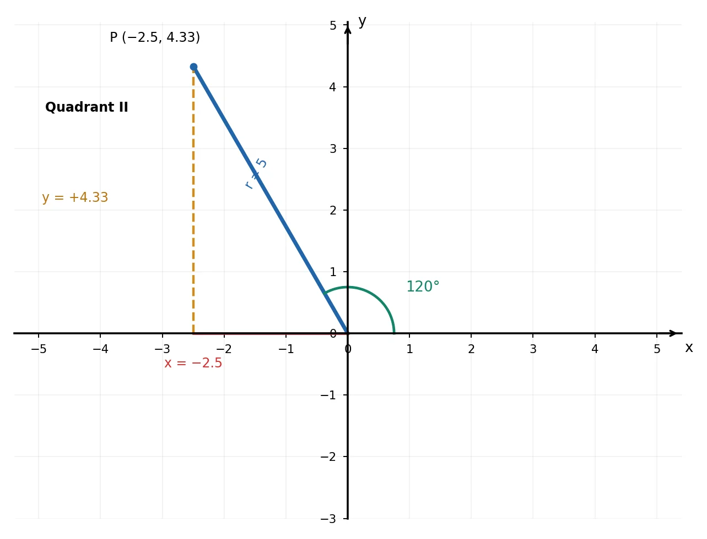
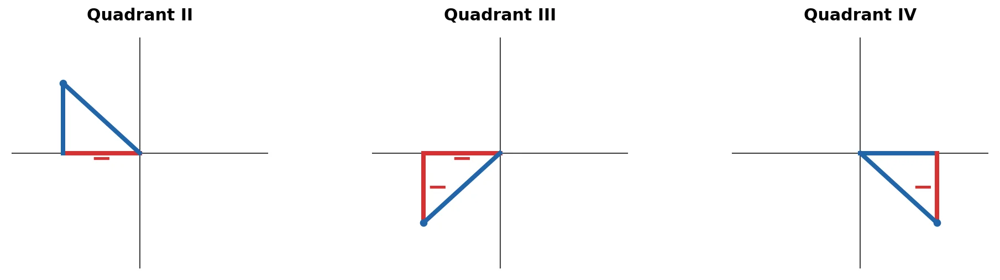

Trigonometric Ratios Beyond 90°
SOH–CAH–TOA starts with acute angles in a right triangle. To extend trigonometry to angles beyond 90°, use a coordinate plane and signed projections.
For a point P = (x, y) on the terminal side, r is the positive distance from the origin.
The Four Trigonometric Ratios
The horizontal projection x extends the idea of the adjacent side; the vertical projection y extends the opposite side. Unlike side lengths in a right triangle, these projections may be negative. The radius r is always positive.
Supplementary-Angle Relationships (Quadrant II)
For an acute reference angle θ with 0° < θ < 90°, the angle 180° − θ lies in Quadrant II. Its horizontal projection changes sign, but its vertical projection does not.
Example: 120° (Quadrant II)
The reference angle is 60°, because 120° = 180° − 60°. On the diagram, r = 5, x = −2.5, and y ≈ 4.33.
In Quadrant II, x < 0 and y > 0. Therefore sine is positive, whereas cosine, tangent, and cotangent are negative.
Signs by Quadrant
Quadrant I: all positive. Quadrant II: sine positive. Quadrant III: tangent and cotangent positive. Quadrant IV: cosine positive. Tangent is undefined when x = 0; cotangent is undefined when y = 0.

Reference Angles in All Four Quadrants
A reference angle is the smallest positive angle between the terminal side and the x-axis (positive or negative). Measure from the nearest x-axis direction, not from the y-axis.
- Quadrant I (0° < θ < 90°): α = θ
- Quadrant II (90° < θ < 180°): α = 180° − θ
- Quadrant III (180° < θ < 270°): α = θ − 180°
- Quadrant IV (270° < θ < 360°): α = 360° − θ
Angles on an axis (0°, 90°, 180°, 270°, 360°) are boundary cases. For other angles, first find a coterminal angle between 0° and 360°.
Example: 210° (Quadrant III)
The nearest x-axis direction is 180°, so the reference angle is 30°. Both x and y are negative.
Example: 300° (Quadrant IV)
The nearest x-axis direction is 360°, so the reference angle is 60°. Here x > 0 and y < 0.
Reference-Angle Identities by Quadrant
| Ratio | Quadrant II: 180° − α | Quadrant III: 180° + α | Quadrant IV: 360° − α |
|---|---|---|---|
| sin | |||
| cos | |||
| tan | |||
| cot |
How to Remember Signs: Draw the Signed Right Triangle
Instead of memorizing quadrant sign rules, draw a right triangle from the terminal side to the x-axis. Treat the legs as signed projections: left is negative x, right is positive x; up is positive y, down is negative y. The hypotenuse r is always a positive length.

- Quadrant II: x < 0, y > 0 — sin positive; cos, tan, cot negative.
- Quadrant III: both legs negative — sin and cos negative; tan and cot positive.
- Quadrant IV: x > 0, y < 0 — cos positive; sin, tan, cot negative.
Use sin θ = y/r, cos θ = x/r, tan θ = y/x, and cot θ = x/y wherever the denominator is nonzero.